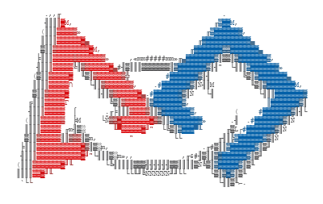
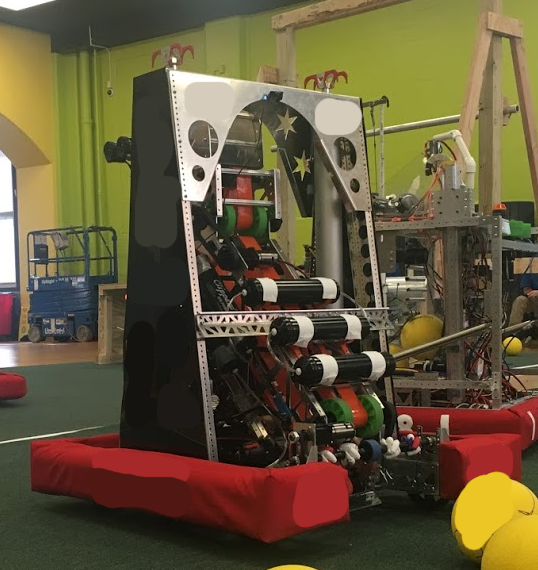
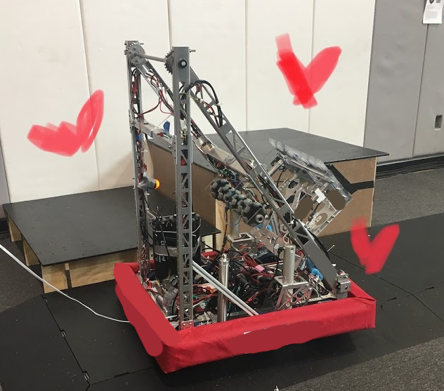
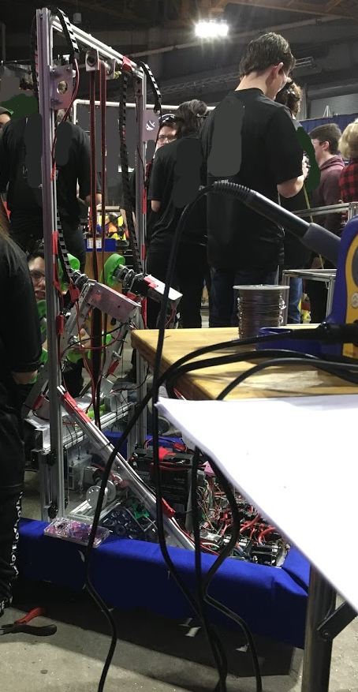

FIRST Robotics Competition
The only extracirricular that keeps you at school until 8:00 every day and
isn't a varsity sport.
what's a FIRST?
FIRST, put simply, is a non-profit organization that maintains and creates robotics competitions for young people all over the world. There are multiple levels of competition- LEGO League or FLL for elementary school, Tech Challenge or FTC as a 'junior varsity' and lower-budget middle and high school competition, and the Robotics Competition or FRC, the flagship program and self-described "varsity sport for the mind." I don't make this stuff up. FIRST programs may drip in cheesy one-liners and marketing slogans, but it's all part of the appeal.
robots
Elements of images have been censored for privacy reasons.
2020 - "Laika"
>
Named unofficially last minute as per tradition, this time with a catch- we were so insanely proud of this robot that we decided to give it a respectable name. Laika, despite not winning us competitions and being built during the cancelled season, was our most successful robot.
The drivetrain was driven by 4-6 Falcon 500's and WCP DS gearboxes. It could shift gears pneumatically.
Climbing was achieved with two enormous pistons, the standard FRC compressor, and tons of air cylinders. Their position could be easily adjusted with double action solenoids. The system was maintained with atmospheric air via check valves.
The intake was a spinning rod with 3D printed meccanum wheels. We couldn't buy them small enough. We had trouble with this system because we were pushing the power cells under instead of into the robot- this issue was partially alleviated with the piece of lexan under the indexer.
The indexer was a complicated system outfitted with range sensors to properly space the power cells inside the robot for outtaking, multiple motors, and belts outfitted over crowns. The troubleshooting on this thing was painful, but it was worth it. We had trouble with the belts loosening over time and sliding, but it held together.
The outtake was an almost entirely custom mechanism, sans the two 775pros running the mechanism. The gearbox was custom designed, reasonably accurate, and super powerful- power cells passing through the system were often the subject of a fine yellow dust zipping out of the robot when the motors were running at top speeds.
Electronics had a modular, fold-out design on removable hinges, making the main control system easily replacable in the case of an accident and easy to service on a horizontal plane, easily moving back into a vertical position for space saved. We did a ton of sensor work on this robot and worked meticulously with the other subsystems! It was awesome!
Vision systems were implemented for the first time. The robot could auto-aim to the target autonomously with the push of a button. We were able to score points beyond moving past the auto line for the first time in the extent of my team membership.
We were 6th seed captain and played in the quarterfinals.
2019 - "Jankbot 9000"

Oh, jankbot. The team underwent a ton of last-minute changes this year, and this robot is the result. We love it regardless. We attended our first off-season competition with it and added a skull to the top. It was awesome.
Notable features: The pneumatics system was pretty cool. There were four pistons on the bottom of the robot that boosted the robot into the air to climb onto elevated platforms. It was better than the winch would've been. Pistons were also used in our outtake, where velcro would stick onto the hatch panel and the stroke would force the release. Our drivetrain, as with the other years, had pneumatic shifting, and worked extremely well.
What didn't work: A week before we were supposed to bag the robot, we were testing the arm that was supposed to lift the intake for the first time, but it was run backwards and the motors broke instantly. A lot of trouble was had with the chains- there was no tensioner- worse, the physics of lifting our heavy intake and outake up with the thin axel and gears was questionable at best. In the end, we only scored with hatch panels, climbed, and played defense, but we were still proud of it and it was a great improvement from 2018.
We played in the semifinals.
2018 - "Shabbabot"

It was a rough season. We had tried our hearts out and played our best, but statistically, we hadn't made a dent. We were taking the robot apart in the pit during alliance selections when, over the loudspeaker, we learned that the number one seed had chosen us as their partner. There were a few solid moments of silence and confusion, and then we immediatley scrambled to put our robot back together. I'll never forget it.
Shabbabot was living evidence that the robot isn't everything in FIRST. We had an intake/outtake to earn powerups with, a camera feed, and a fast drivetrain to play defense with, but that was it on the robot's level. What we had to make up for it was significant- we had a team of incredibly smart teenagers with hearts of gold and an absolutely spectacular drive team. We won the entire tournament and went to the world championships. I never thought I would see it happen, but it did, and it was a dream fulfilled. For a city, public school team, what happened to us was pretty much unheard of.
my journey with FIRST
My experiences alongside FIRST have paralleled my growth as a person, so there's some of that in here.
elementary school
2012 - FLL "Senior Solutions"
There weren't really "positions" on our FLL team as much as it was everyone scrambling to learn how to build a robot on the weekends! My Girl Scout troop recieved a grant for the FLL kit- it was a lucky break that was likely a catalyst for the rest of my involvement in robotics. FLL teams design a product or service that addresses a world problem aligning with the yearly theme. Our proposal? A walker with a sensor that yells at you to fix your posture.
We won the rookie award at our regional.
2013 - FLL "Nature's Fury"
Our project was an insulation to be added to a house in the event of an emergency to soak up water. The test product was created with a combination of coconut fiber and ShamWoW-equivalent towels. I distinctly remember creating a "simulation" for this in Minecraft with the sponge block.
We advanced to the state championships at Motorola this year. Back then, all the competition levels competed under one roof at certain competitions- seeing the bigger robots was insanely exciting.
high school
2017/2018 - FTC "Relic Recovery"
Coming into high school, I pretty much begged my way onto the robotics team. Realistically, I had no chance- none of the teachers knew me and I was a freshman, but someone dropped out of one of our FTC teams last minute and they gave me a chance with the avalible slot. Our robot did terribly competitively- we were mostly rookies and the seniors were unengaged- but I finally started opening up to people in HS and it was a perfect training ground for the skills I would have to use and teach later.
2018 - FRC "Power Up" - Electrician
I found a home in FRC. Back then, the team culture was almost military- messing up would land you in deep trouble, or, worse, "off the team", but being able to cope well under pressure is a great skill to have. Regardless, this changed and I'm greatful for it.
For the first two or three weeks of the season, I was insanely anxious- I barely spoke to anyone at our meetings, despite my desperatley wanting to. It took solid encouragement from my mentor- an awesome junior I'll never forget- and some new friends to really break out of my shell, but over time, I was able to overcome most of the anxiety.
The team underwent a lot of unfortunate, harsh changes that year, but we all worked hard and alongside an amazing alliance, we won our state championship and went to worlds.
2019 - FRC "Deep Space" - Head Electrician
It was a year of change for the team! At the time it was overwhelming, but it all paid off and things are a lot stronger now. (We did lose FTC in the process.) My mentor was promoted to team captain, and suddenly there were dozens of people interested in being electricians after our victory- I went from working totally independently without a clue of how to mentor someone to being in charge of a big group of people that were my age or older. Thankfully, I had help, and I grew immensely as a person this year- my people skills improved slowly, as did my confidence.
2020 - FRC "Infinite Recharge" - Head Electrician
The best robotics season any of us had, promptly cut in half by coronavirus. We were at the top of our game this year, being an alliance captain for the first time. Our robot was rock-solid, too! Sadly, we never got a chance to pull out all the stops, but we did walk away with a spirit award and some amazing competitive stats.
2021 - FRC "Game Changers" - Team Captain
I am so insanely excited for this year!! My absolute best friends and I are finally seniors and it's our chance to give a new generation of freshmen the same experience we did. Obviously, I'll let you guys know how it goes.
electrical takeaways
It is possible to coast through setting up an FRC control system with very little electronics fundamentals under your belt. However, whether you're an aspiring FIRST student, a clueless teammate, a current FIRST electrician, or simply someone curious enough to look in, I cannot emphasize enough how important it is to go beyond the bare minimum for FRC electronics. National Instruments, WPI, CTR, REV, and FIRST have done a great job creating a hardware and software ecosystem that is incredibly beginner-friendly, but you will be able to troubleshoot more effectively, create more elegant solutions, and have more fun by digging deeper into your motor controllers' firmware and creating custom circuits.
The control system is going to change after my graduation, but at least for now, as brushless motors become an even greater asset in FRC, the management of power and current draw on a robot has become a huge concern for many teams. The PDP is a sizable, but still limiting piece of hardware, and FRC's battery rules are strict. I have not used REV's ecosystem for brushless motors, but CTR does a good job at giving the user information back from the motors and I assume they do too.
this page a work in progress